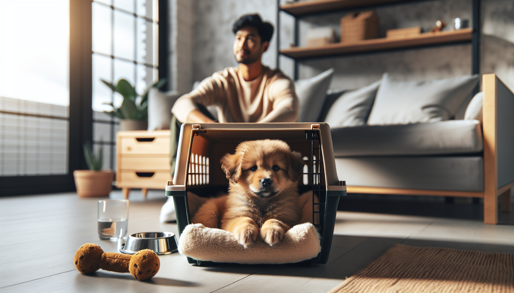

Bringing home a new puppy is exciting, adorable, and often a little overwhelming. Between potty accidents, midnight whining, zoomies, and chewed-up socks, many new dog owners quickly discover that structure matters. One of the most useful tools you can use from day one is a crate.
When introduced correctly, a crate is not a punishment. It is a safe, predictable space that can help your puppy sleep better, learn house training faster, travel more safely, and build independence. For rescue adopters and first-time puppy parents alike, crate training can create a calmer home and set the stage for lifelong good habits.
This complete guide will show you exactly how to crate train a new puppy using positive reinforcement and science-backed principles. You will learn how to choose the right crate, create positive associations, manage whining, build duration gradually, and avoid common mistakes that slow progress.
Dogs are denning animals in the sense that many enjoy small, secure resting spaces when those spaces feel safe and voluntary. A crate can become that kind of retreat. It helps reduce overstimulation, supports sleep, and gives puppies a place to settle when they are tired but do not yet know how to switch off.
Crate training is also one of the most effective house training tools. Most puppies are reluctant to soil the place where they sleep, so a properly sized crate encourages bladder and bowel control between potty trips. This does not mean puppies can hold it for long periods. It means the crate helps you create a routine and prevent accidents while your puppy is learning.
Used well, a crate can help with:
The key is this: the crate must predict good things. Food, rest, toys, and comfort should happen there. Fear, forced isolation, or long periods of confinement should not.
Before training begins, make sure you have a crate that suits your puppy’s size, age, and temperament. Wire crates, plastic airline-style crates, and soft-sided crates can all work, although soft-sided options are usually better for already crate-trained dogs rather than brand-new puppies who may chew or scratch.
Your puppy should be able to stand up, turn around, and lie down comfortably. If the crate is too large, your puppy may sleep in one corner and potty in another. For growing puppies, a crate with a divider panel is often the best choice because you can adjust the usable space as they grow.
To make the crate inviting:
Avoid leaving collars on unsupervised puppies in crates, as they can catch on crate bars. Safety always comes first.
The first goal is not closing the door. The first goal is helping your puppy think, “This place is great.” Start slow and make the crate feel like a reward zone.
Begin by tossing a few treats just inside the crate and letting your puppy walk in and out freely. Praise calmly. Feed meals near the crate, then just inside it, and eventually at the back of the crate as your puppy becomes more comfortable. You can also scatter treats or use a stuffed food toy so your puppy spends time inside without pressure.
Try this simple progression:
Keep sessions short and upbeat. If your puppy hesitates, do not push them in. Voluntary participation builds confidence much faster than force. A cheerful cue like “crate” or “bed” can be added once your puppy is reliably going in on their own.
Successful crate training depends on gradual progress. Puppies cope best when increases in duration happen in small, manageable steps. Think minutes, not hours, especially in the beginning.
Day 1 to 3: Focus on positive associations. Feed meals in the crate, offer treats inside, and let your puppy nap there with the door open if possible. Briefly close the door for 5 to 15 seconds while your puppy is eating or chewing, then open it again.
Day 3 to 7: Begin short closed-door sessions while you remain nearby. Sit beside the crate, read, work, or watch television. Reward quiet behavior. Open the door during calm moments, not while your puppy is actively barking or scratching.
Week 2: Increase duration gradually and begin moving short distances away. Step out of sight for a few seconds, then return before your puppy becomes upset. This teaches that your leaving is temporary and safe.
Week 3 and beyond: Continue building duration, vary the time of day, and use the crate for naps, bedtime, and short planned absences. Keep balancing crate time with exercise, socialization, training, play, and rest.
A helpful rule of thumb is to avoid making big jumps. If your puppy can stay relaxed for 3 minutes, do not suddenly try 20. Build slowly enough that success is easy.
Nighttime is often the hardest part for new puppy parents. Your puppy has just left their litter or previous environment, and sleeping alone can feel scary. This is normal. It does not mean crate training is failing.
For the first several nights, place the crate close to your bed so your puppy can hear and smell you. Some puppies settle better with a soft blanket over part of the crate, a warm safe heat source designed for pets, or a heartbeat-style comfort toy. Keep the environment calm and boring overnight.
Take your puppy out for potty breaks on a schedule. Young puppies usually need to go out:
If your puppy wakes and fusses at night, assume they may need to toilet before assuming it is only attention-seeking. Carry or leash them calmly to the potty area, keep the trip quiet, reward elimination, and return them to the crate without starting playtime.
During the day, the crate supports house training by preventing unsupervised accidents. But it is only one part of the process. You still need a consistent routine, frequent outdoor trips, reinforcement for pottying in the right place, and close supervision when your puppy is loose in the house.
Some whining is normal in the early stages. Puppies protest change, especially when tired or separated from you. The goal is not to eliminate all noise instantly. The goal is to identify why your puppy is struggling and respond in a way that teaches calm, not panic.
Ask yourself:
If your puppy whines briefly and then settles, wait it out. If they are escalating into panic, scratching frantically, drooling, or showing intense distress, the training plan is moving too fast. Go back a step and rebuild positive associations.
Do not use the crate for punishment, and do not force your puppy inside while they are frightened. That can create a lasting negative emotional response. Instead, shorten sessions, add better rewards, and practice more often at easier levels. Calm, gradual repetition works better than trying to “teach them who is boss.”
If your puppy repeatedly struggles despite careful training, or if you suspect separation anxiety, consult a qualified force-free trainer or a veterinary behavior professional. Early support can make a huge difference.
Even committed puppy owners can unintentionally make crate training harder. Avoiding these common mistakes will speed up progress and protect your puppy’s confidence.
A good crate routine includes balance. Puppies need training, sniff walks, social experiences, naps, chewing outlets, and human connection. The crate is a management tool, not a full-time lifestyle.
Crate training does not have to mean your dog is crated forever. Many adult dogs continue to love their crate as a sleeping spot, while others gradually earn more freedom in the home. The right timeline depends on your dog’s age, chewing habits, house training reliability, and ability to relax alone.
You can begin testing more freedom when your puppy is consistently house trained, not destructive, and able to settle calmly outside the crate. Start small. Use a puppy-proofed room, exercise pen, or baby-gated area before allowing full access to the house. Keep the crate available as an option so your dog can choose it voluntarily.
For many dogs, the ideal outcome is not “never use the crate again.” It is “my dog feels safe and comfortable in the crate whenever needed.” That can be invaluable for travel, boarding, grooming, emergencies, or recovery periods later in life.
Crate training a new puppy is one of the most practical and effective ways to build good habits early. When done with patience, positive reinforcement, and realistic expectations, it supports house training, improves sleep, reduces stress, and helps your puppy feel secure. The secret is to move gradually, make the crate rewarding, and treat it as a safe haven rather than a place of isolation.
If your puppy is struggling, do not worry. Progress is rarely perfectly linear. Stay consistent, lower the difficulty when needed, and celebrate the small wins. A puppy who naps calmly in their crate for five minutes today may be sleeping peacefully through the night before you know it.
Want more step-by-step help with raising a well-behaved dog? Get our full Dog Training eBook series — new titles added weekly.